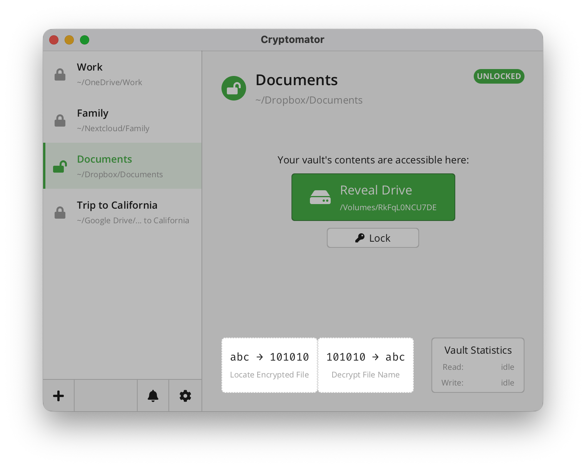
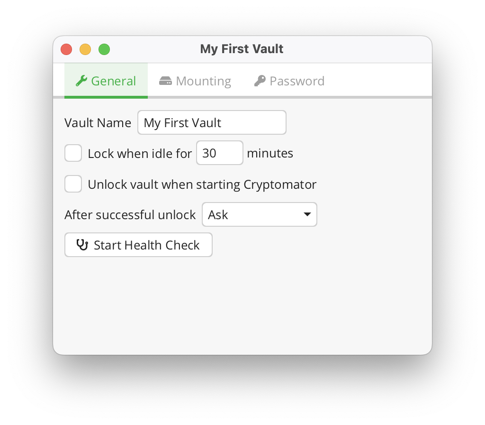

Cryptomator 用了半年我踩过的那些坑——从备份翻车到 RAM 丢数据
Cryptomator 看着简单，选中保险库点一下 Unlock 就完事了。但我用了半年才发现，几个默认设置和操作习惯里藏着真坑，轻则备份报废，重则解锁后文件找不回来。这篇把我踩过的六个坑和怎么躲一次讲清。
开头：它真的简单，但真有坑
我第一次装 Cryptomator 的时候觉得这玩意儿"不就是个给云盘套壳的加密工具吗"——它的官网上介绍得很简单，安装包直接从官方下载拿就行，选中保险库，点 Unlock，输个密码，就出来一个虚拟盘，该怎么用怎么用。确实，从创建第一个保险库到日常文件读写，没超过五分钟就能上手。
但简单背后藏着不少细节。我先后踩了六个坑，有的让我花了一下午抢救备份，有的差点让我以为要重装系统。如果你也在用 Cryptomator，或者正打算上，看完这篇能省不少时间。
坑一：备份保险库没先 Lock——整份备份直接变成废的
症状
我那时候刚学用 Cryptomator，想着"云盘本身就在自动同步密文目录，等于已经在备份了"。有天电脑磁盘快满，我把整个密文目录手动复制到外置硬盘，当时保险库还开着没锁。过了一周云盘出故障，我去外置硬盘找备份解锁，结果报了好几个 .c9r 文件损坏，解锁到一半卡住了——那次损失了至少十几份文档的历史版本。
原因
Cryptomator 的写入是实时加密的，但加密一个文件不是"一锤子砸下去"——它先生成临时文件，加密完再替换原来的 .c9r。如果复制过程正好截到一半：临时文件还没替换旧文件 → 备份里要么是旧的，要么是半加密状态的。更糟的是 masterkey.cryptomator 这种小文件也在被加密写入，虽然体积小但损坏了保险库直接打不开。
解法
备份前必须手动 Lock 保险库。我后来养成了习惯——不管是手动复制到外置硬盘，还是开了云盘同步，备份操作之前先去主界面点一下那个大 Lock 按钮。确认状态徽章从绿色 Unlocked 变成灰色 Locked，再动。如果是云盘自动同步的场景，那就要确保同步发生时保险库大概率是锁的——比如把自动锁定设成空闲 10 分钟就锁。
坑二：只备份了部分密文文件——解密之后目录结构全乱了
症状
朋友让我帮他恢复一份 Cryptomator 备份，他说"备份的时候时间紧，就挑了几个重要的 .c9r 文件复制了"。解锁后他告诉我目录结构跟原来的不一样——原来在 Images for Project/ 文件夹里的图片现在都跑到了根目录下，有的文件直接找不到。
原因
Cryptomator 对文件名和目录层级做了双重加密。解锁状态下你看到的 Images for Project/ 文件夹，在密文目录里其实是一堆 dir.c9r 和 dirId.c9r 文件在维持父子映射关系。你只复制了里面的图片 .c9r，没复制指向那个子目录的 dir.c9r，Cryptomator 就不知道这些图片该归到哪个文件夹里。结果要么丢失，要么被堆到根目录。
解法
备份的最小单元是整个密文目录——就是你在创建保险库向导第二步选的那个文件夹。不用挑文件，不用管里面哪些是"真正有用的"，整个文件夹原封不动复制过去就好。那个目录里三样东西缺一不可：vault.cryptomator（格式配置）、masterkey.cryptomator（加密的主密钥）、d/（所有加密文件和目录结构）。漏一个都可能出事。

坑三：勾了 Remember password——意味着任何能进电脑的人都能解锁
症状
我在自己的笔记本上勾了记住密码，挺方便的，每次解锁保险库自动填密码甚至完全自动打开。后来笔记本借给一个同事临时用几天，他问我"要不要锁保险库"，我才突然意识到——他只要用我的 Windows 账号登录，点一下 Unlock 我的保险库就直接开了，连密码都不用输。这时候我之前觉得很方便的那个勾选框，等于把我的加密形同虚设。
原因
Remember password 的原理很简单——Cryptomator 把你的密码存到了系统钥匙串里。Windows 上用的是 Windows Hello 或 Data Protection API，macOS 上是 Keychain。钥匙串本身是加密的，但它的解密密钥和"你能登录这台电脑"这件事绑定了。只要攻击者能进你的系统（知道 Windows 密码、或者直接硬盘挂载），钥匙串里存的保险库密码就等于直接拿到了。
解法
个人设备（你自己一个人用的手机/笔记本/台式机）勾着没问题。但如果是公司发的工作电脑、经常借给别人的设备、有被偷风险的笔记本——一定别勾。我那台借给同事的笔记本，后来在还给他的时候专门去 Vault Options → Password 页面点了 Remove saved password，确认清干净了才交出去。
坑四：解锁状态下编辑的文件——电脑断电源直接丢
症状
有次我在解锁状态下写一个文档大概写了半小时，没存盘（习惯不好，这锅我认）。然后猫踩了电源，电脑强制断电。重启之后开保险库，那个文档的修改全没了——退回到了上次保存的版本。这不是什么版本历史功能生效，就是编辑过程中没写入磁盘的东西全在 RAM 里，断电就没了。
原因
这是 Cryptomator 的安全设计。解锁后你打开的文件，Cryptomator 是解密到 RAM 里交给你的应用的。你编辑的时候，应用（比如 Word、VS Code）也在 RAM 里改。只有当你显式点保存时，应用才把 RAM 里的内容写回 Cryptomator 的虚拟盘，Cryptomator 再实时加密写回密文目录。中间那个链路任何一环断掉——电脑断电、应用崩溃、强制杀进程——RAM 里的未保存修改就没了。
解法
两个习惯：第一，解锁状态下编辑文件，多按 Ctrl+S，比平时勤一点。第二，把空闲自动锁定设成一个合理的时间——10 分钟左右。这样即使你忘了 Lock、电脑也没断电，至少不会一直挂着等 RAM 里的东西被偷着看。设的位置在 Vault Options → General 里。

坑五：Emergency Access 没弄——同事离职不交密码，数据就凉了
症状
这个坑我是从一个朋友的公司那里听来的——他们用 Cryptomator Hub 做团队文件共享，有个同事离职了，没交保险库密码（他说忘了，谁知道真的假的）。公司那边没启用 Emergency Access，也没留 Recovery Key，最后那个保险库里的文件只能封存，等于损失了一堆历史合同和审计记录。
原因
Hub 版本和个人版最大的区别在于信任边界——个人版你只需要相信 AES-256 和你自己的密码，Hub 版还需要相信 Hub 服务端的完整性。但 Hub 2.0 加了 Emergency Access 机制，分 Online Recovery 和 Offline Recovery 两种：前者是 Hub 正常运行时用 Owner 的 Recovery Key 恢复主密钥、给新成员生成访问权；后者更绝——Hub 服务端挂了也不怕，用 Owner 的 Recovery Key 加一个新密码就能把保险库变回个人版来解锁。问题是这套机制需要你提前留好 Recovery Key，而且 Hub Admin 需要知道怎么触发 Emergency Access。如果没做这些准备，人走了数据就真没了。
解法
每个 Hub 保险库的 Owner 都必须保存 Recovery Key，而且不能只存一份——云盘一份、纸质打印一份存安全柜。Hub Admin 要提前测试过 Emergency Access 流程，知道在什么情况下触发 Online Recovery、什么情况下用 Offline Recovery——具体怎么操作可以去cryptomator文档翻。这东西平时看起来没用，真出事的时候是唯一救稻草。
坑六：文件名加密的短名阈值调太高——云盘同步直接报错
症状
我在创建第二个保险库的时候手贱去点了专家设置，把加密文件名长度阈值从默认 220 改成了 240。当时想的是"尽量让短名机制少触发，保持原始文件名映射"。结果保险库放在 OneDrive 上，没过一周 OneDrive 同步报错了——好几个文件提示"路径太长无法同步"。
原因
Cryptomator 的短名机制（Name Shortening）默认阈值是 220 个字符，这个数字是经过实测的——Windows NTFS 路径总长度 260、macOS APFS 文件名 255、Dropbox 255、OneDrive 255。阈值设在 220 能覆盖几乎所有主流系统和云盘，留了 35 字符的缓冲。我调到 240 之后，某些加密后的文件名直接触碰到了 OneDrive 的 255 上限，同步直接失败。更麻烦的是，短名阈值是写在 vault.cryptomator 里的，改了之后整个保险库的加密命名规则都变了，之前已经加密过的文件也要重新处理。
解法
除非你 100% 确定你的目标云盘/系统能扛多长的文件名，否则永远保持默认 220 不要动。我那次改回去花了一个小时——导出密文目录、重新建保险库、用正确的短名阈值重新映射，幸好当时数据量不大。这东西叫"专家设置"不是白叫的，普通人别碰。
防坑清单
用了半年 Cryptomator 之后，我给自己列了一份每次操作前快速扫一眼的防坑清单，也给你：
- 备份前一定 Lock 保险库——无论手动复制还是云盘同步，确认状态徽章是灰色 Locked 再动手
- 备份整个密文目录，不挑不拣——单独备份
.c9r文件或masterkey.cryptomator都可能翻车 - 勾 Remember password 之前想清楚设备是不是只给自己用——公司电脑/借出去的设备一定别勾
- 解锁状态下编辑文件多按 Ctrl+S——RAM 解密意味着断电/崩溃就丢未保存的修改
- 用 Hub 的话，每个保险库 Owner 必须保存 Recovery Key，而且最好三份不同介质
- 专家设置里的短名阈值别碰——默认 220 是给所有主流系统留了缓冲的
Cryptomator 的安全模型其实很扎实——AES-256-GCM 加密文件内容、文件名也做了确定性加密、RAM 解密机制防止明文落盘。但正是因为这些机制，日常操作里的几个小习惯踩了它的边界就会出事。知道这些坑之后，这软件其实相当省心，我现在已经离不开它了。
Cryptomator 的开发和资料维护在三个仓库都能拿到，方便不同网络环境的同学查阅：主仓库在GitHub，国内访问慢的话可以看同步到Gitee和GitCode的副本，三个仓库里都有完整的保险库格式说明、加密原理文档和 Hub 部署脚本。